今年的火熱時刻任務，難度有提升
所以做了一期新的攻略，讓剛加入的玩家可以輕鬆解完
開了一個新的帳號，並以帳號實錄的方式做成影片
說明欄有時間註記，方便大家查看特定章節
第一次製作影片，還在學習，請大家多多包涵
本篇會分享攻略過程及活動角色選擇，有任何問題或建議都歡迎留言


< 完整攻略影片 >
--------------------------------------------------------------
開局重點
1. 召喚師之路
2. 快速拿到 100 個活動幣
3. 加公會 ( 有4個任務 )
一開始先照著 召喚師之路 的任務往下做，拿到 水魔劍 及 紅水晶 等資源
大概打完特拉恩叢林後，會有500水晶 ( 記得領 歡迎活動 送的 紅水晶 )
消耗500水晶 ( 蓋水晶巨人 + 買三張神秘卷 )，獲得100代幣

用風鳳凰打完 澤羅卡遺址 ( Normal )之後，次元黑洞 就會開啟 ( 記得點任務引導 )
接著先解 次元黑洞任務 的 第 2 ~ 7 個，第一個任務後面再解
打完第一個 卡勒贊 次元後，先換出 暗伊 再往下解
接著先解 次元黑洞任務 的 第 2 ~ 7 個，第一個任務後面再解
打完第一個 卡勒贊 次元後，先換出 暗伊 再往下解
解法請參考 影片 06:37 處，每個次元都打一關，即可解完 6 個任務

解完之後，任務完成數來到 8 個，換出 火吸血鬼

全新召喚師特別支援

製作任務 - 雕像 古代守護者
拿到 暗伊 + 火吸 後，我們已經能打過 魔力地下城10層
打過之後就能 蓋雕像 解掉任務，參考 影片 15:54 處
接著打完 劇情 Hard + Hell 難度，此時任務完成數來到 11 個
可以換出 暗吸血鬼伯爵
拿到 暗伊 + 火吸 後，我們已經能打過 魔力地下城10層
打過之後就能 蓋雕像 解掉任務，參考 影片 15:54 處

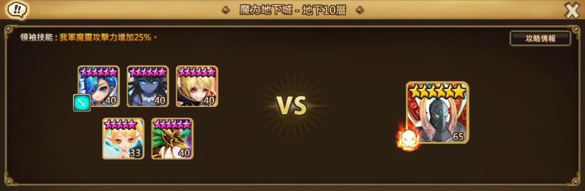

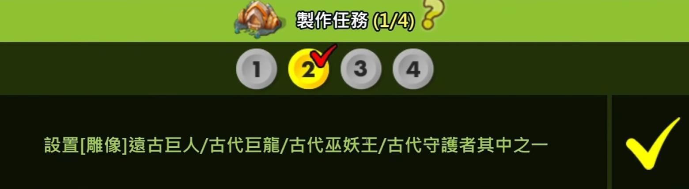
接著打完 劇情 Hard + Hell 難度，此時任務完成數來到 11 個
可以換出 暗吸血鬼伯爵
公會任務 第 3 個 跟 第 4 個，記得每天都要解，才能在第 6 天解完
公會任務解法 參考 影片 18:57 處
公會任務解法 參考 影片 18:57 處

困塔 Hard 100層，會等拿到 光派 再打
這邊先打完 Normal 即可
錄影時試煉之塔尚未刷新，但隊伍打法仍可使用
雙光瓦、暗伊 光術士的打法，請參考 影片 1:11:43 處
地獄塔 ( Hell ) 一層打法，請參考 影片 1:12:15 處
Normal 100層 隊伍介紹 + 打法，請參考 影片 21:36 處
Hard 100層 隊伍介紹 + 打法，請參考 影片 1:10:24 處
巨人地下城
開始打 巨人地下城 前，我們需要先準備「 光格里芬 」
並到火熱時刻商店，購買魔礦，提高 風鳳凰 + 光格里芬 的輸出
打巨人的前置準備，請參考 影片 24:28 - 28:04
隊伍組成 = 暗伊L、光卡烏格、光仙女王、風鳳凰、光格里芬
Normal 100層 隊伍介紹 + 打法，請參考 影片 21:36 處
Hard 100層 隊伍介紹 + 打法，請參考 影片 1:10:24 處

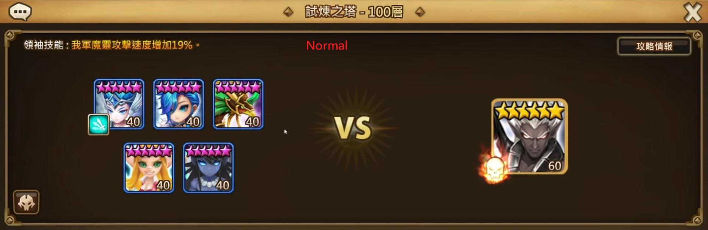

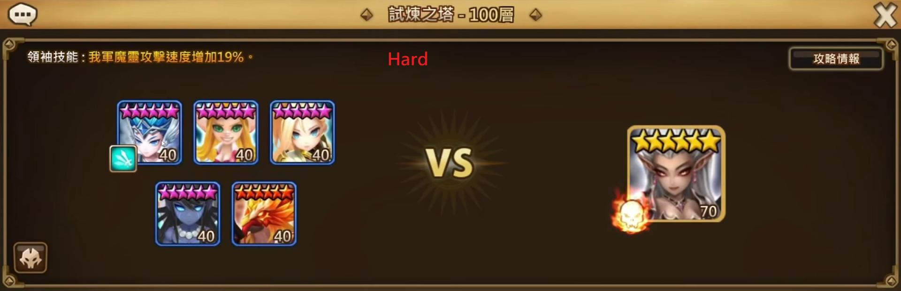
巨人地下城
開始打 巨人地下城 前，我們需要先準備「 光格里芬 」
並到火熱時刻商店，購買魔礦，提高 風鳳凰 + 光格里芬 的輸出
打巨人的前置準備，請參考 影片 24:28 - 28:04
隊伍組成 = 暗伊L、光卡烏格、光仙女王、風鳳凰、光格里芬
建議出手順序 = 光卡烏格 或 光仙女王 → 暗伊 → 風鳳凰 → 光格里芬
符文、通關片段，請參考 影片 28:05 處


龍之地下城
開始打 龍之地下城 前，我們需要先準備「 火格里芬 」
隊伍組成 = 火吸L、光卡烏格、暗伊、光格里芬、火格里芬
建議出手順序 = 光卡烏格 → 暗伊 → 火格 → 光格 → 火吸
符文、通關片段，請參考 影片 31:00 處

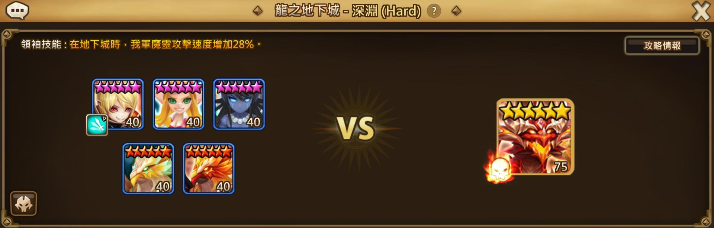

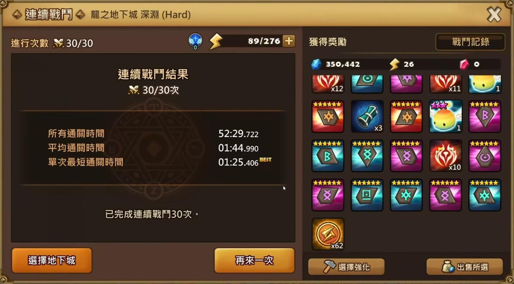
製作任務 - 能量提煉儀、異變者
接下來到 魔法製作所 ，蓋出 能量提煉儀
刷 魔法粉劑 時，最好先讓幸運消耗到 0，不然很難打到
異變者 需要召喚師等級達到 25 ，並開啟 異界裂縫
這兩個任務的解法，請參考 影片 33:48 處


開始打 異界裂縫 前，我們需要先準備「 火犬神 」、「 暗犬神 」、「 火魔劍 」
異界裂縫任務，隊伍、符文、連續戰鬥30次紀錄，請參考 影片 37:36 處
火魔劍 用 火熱時刻召喚活動 取得

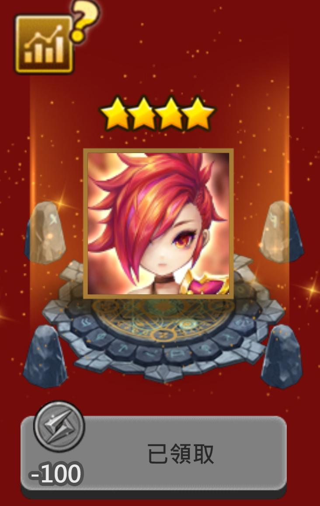
焰火魔獸 在拿到 火雷帝 前，很難解掉任務 ( 會有一兩場 A+ )
會等之後拿到火雷帝後再解，請參考 影片 1:07:46
< 暴風魔獸、光輝魔獸、漆黑魔獸 >
風、光、暗三個屬性，用同一個隊伍就能打出 SSS
之後可以依照自己抽到的角色，參考攻略情報更換
之後可以依照自己抽到的角色，參考攻略情報更換

需要使用 加攻擊條 或 加攻速 的角色
可以使用 「風蠻王」、「風格里芬」
可以使用 「風蠻王」、「風格里芬」
建議用 火熱時刻召喚 ，換出風蠻王
之後 討伐戰 和 迷宮 也都能用
之後 討伐戰 和 迷宮 也都能用

建議等拿到 火雷帝 之後，再回頭解掉任務
拿到之前，連續戰鬥30次很難平均S以上 ( 只要一場 A+ 就解不掉 )
拿到之前，連續戰鬥30次很難平均S以上 ( 只要一場 A+ 就解不掉 )

異界團戰解法，請參考 影片 49:58 處

水加農炮 用 火熱時刻召喚活動 取得
隊伍組成 = 水加農炮L、暗哈勒普、火犬神、火魔劍、光格里芬
建議出手順序 = 水加農炮 → 暗哈勒普 → 火犬神 → 火魔劍 → 光格
審判地下城
這次將 風魔陣 換成使用 暗哈勒普，暗哈符文用體力%
換哈勒普也能穩刷，通關速度也有提升
這邊我們需要調整Boss關的攻擊順序，改成 左邊水晶 → 右邊水晶 → Boss
隊伍組成 = 火吸L、火魔劍、火犬神、暗哈勒普、暗吸血鬼伯爵

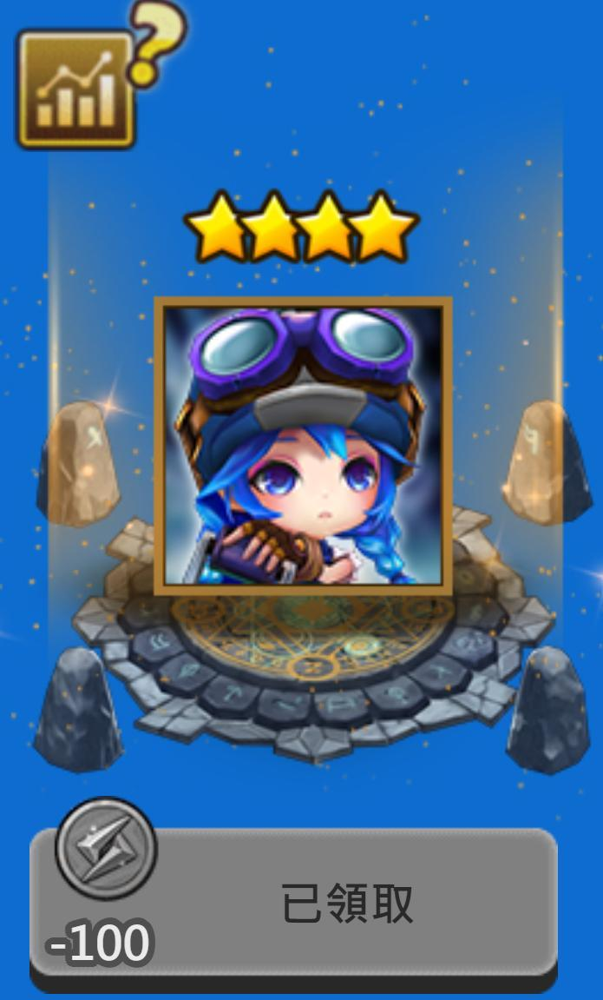
隊伍組成 = 水加農炮L、暗哈勒普、火犬神、火魔劍、光格里芬
建議出手順序 = 水加農炮 → 暗哈勒普 → 火犬神 → 火魔劍 → 光格
符文、通關片段，請參考 影片 53:18 處

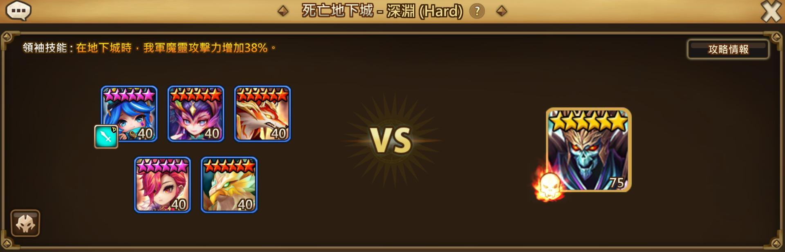

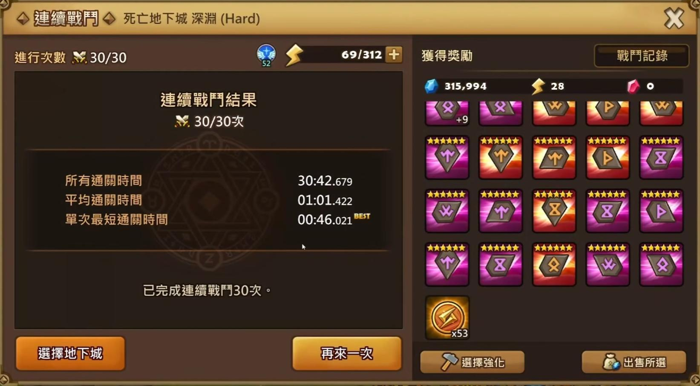
審判地下城
這次將 風魔陣 換成使用 暗哈勒普，暗哈符文用體力%
換哈勒普也能穩刷，通關速度也有提升
這邊我們需要調整Boss關的攻擊順序，改成 左邊水晶 → 右邊水晶 → Boss
隊伍組成 = 火吸L、火魔劍、火犬神、暗哈勒普、暗吸血鬼伯爵
建議出手順序 = 暗伯爵 → 暗哈勒普 → 火犬神 → 火魔劍 → 火吸
符文、通關片段，請參考 影片 55:40 處
鋼鐵地下城
記得要換 風功夫妞 的符文，讓他第一個出手
符文、通關片段，請參考 影片 55:40 處

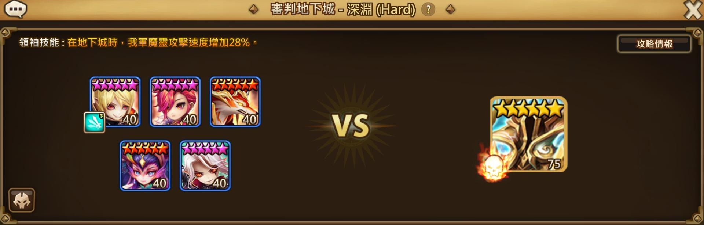

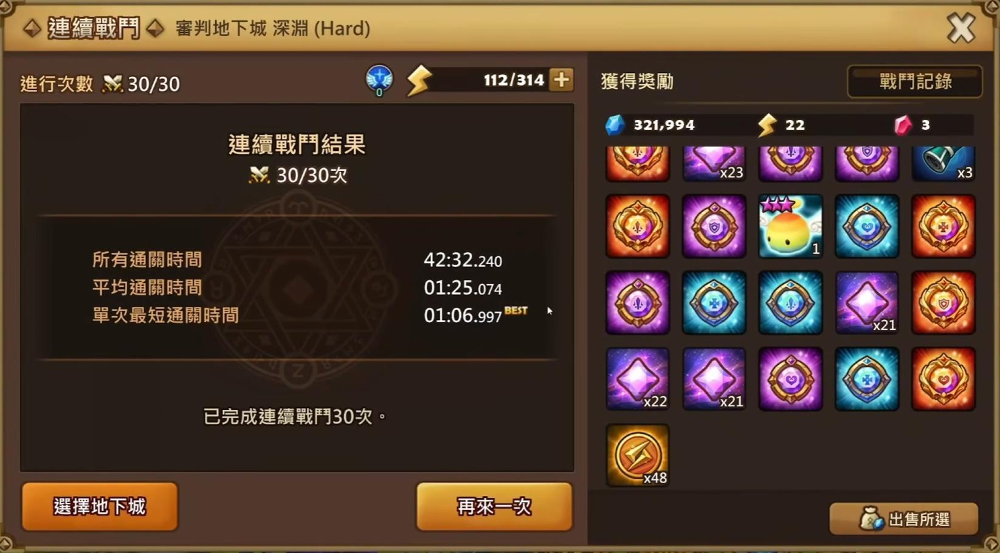
鋼鐵地下城
記得要換 風功夫妞 的符文，讓他第一個出手
開場上 無法獲得強化效果的 DeBuff
隊伍組成 = 火吸L、風功夫妞、光卡烏格、光仙女王、暗犬神
隊伍組成 = 火吸L、風功夫妞、光卡烏格、光仙女王、暗犬神
建議出手順序 = 風功夫妞 → 光卡 或 光仙女王 → 暗犬神 → 火吸
符文、通關片段，請參考 影片 58:23 處
精靈地下城
打精靈地下城前，我們需要準備「 火環 」
火環可以從組合陣取得，建議用組合的就好
隊伍組成 = 火吸L、火犬神、火環、火魔劍、風魔陣
建議出手順序 = 火環 → 風魔陣 → 火犬神 → 火魔劍 → 火吸

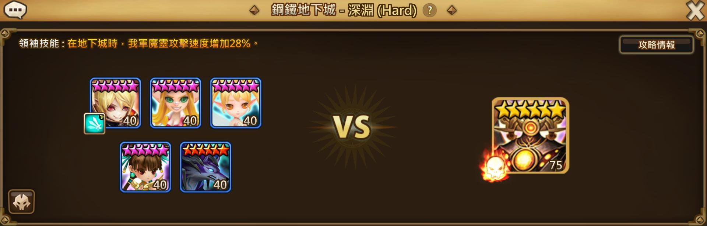

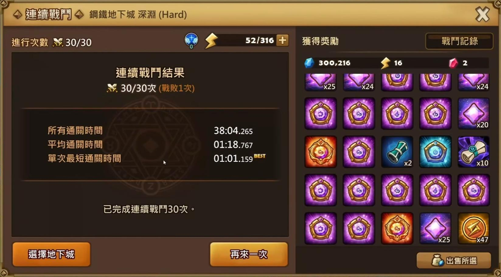
精靈地下城
打精靈地下城前，我們需要準備「 火環 」
火環可以從組合陣取得，建議用組合的就好

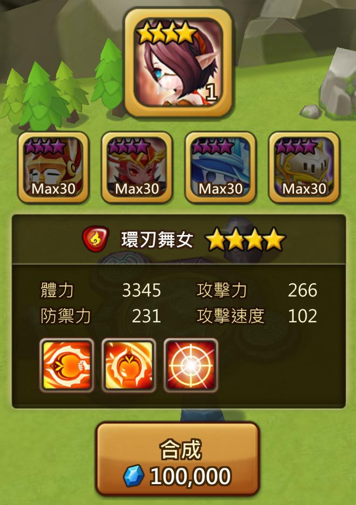
隊伍組成 = 火吸L、火犬神、火環、火魔劍、風魔陣
建議出手順序 = 火環 → 風魔陣 → 火犬神 → 火魔劍 → 火吸


拿到 光派 之後，就可以把 困塔100層 打完 ( 參考前面 試煉之塔 章節 )
世界Boss任務只要放 20 隻 6 星 40 等 的魔靈，並把符文魔礦都裝上
就可以達成，可參考 影片 1:03:26 處
就可以達成，可參考 影片 1:03:26 處

次元雕像、遠古守護者3階段以上連續戰鬥30次
要蓋 次元雕像 = 打過該次元的五階段一次 ( 復活也算 )
這裡我選擇打 艾魯尼亞次元 ，前期的魔靈比較容易達成
並且之後符文傷害提升後，可以穩刷五階段
符文傷害提高之後，可以把 風魔陣 換成 風鳥身女妖，穩定破防後輸出
隊伍組成 = 風鳳凰L、風流浪、風異變、風魔陣
建議出手順序 = 風流浪 → 風鳳凰 → 風魔陣 → 風異變
這兩個任務的 解法、符文、通關片段，請參考 影片 1:04:08 處

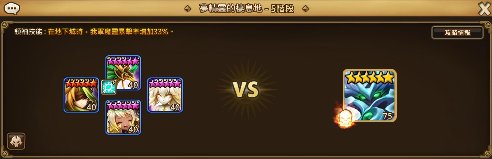

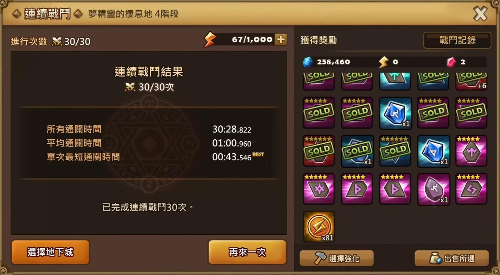
自選商店原五推薦
到這邊，我們已經把全部任務都解完
可以自選一隻商店原五，我個人比較推薦 銀色尾翼
有+33%攻擊的隊長技，可以用在 三頭龍、深淵龍、炎土次元等速刷隊伍

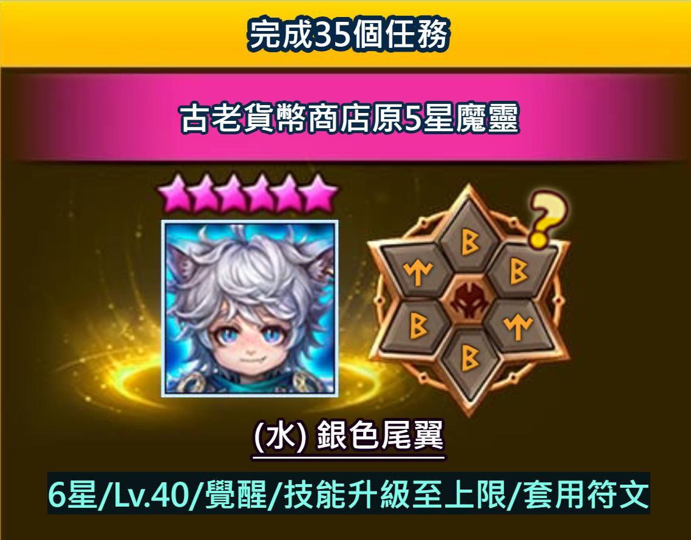
異界團戰 - 三頭龍五階單人速刷
< 前置準備 >
1.
開始組單人速刷隊前，我們需要取得一些角色
角色介紹、符文、隊伍組成、通關片段，請參考 影片 1:14:03 處
全新召喚師歡迎活動會送1000個古老貨幣，我們可以用500個換出「 火暗影爪 」
我們還需要在秘密地下城中，取得「暗維京」和 「光流浪騎士」，
聊天頻道如果出現這兩隻的地下城，記得各打一隻出來，可以吃二星其他屬性升到滿技
然後用 召換師之路 的 特別任務，自選換出 火太白 ( 火屬性攻擊+45% )
如果已經用掉的話，可以用 火熱時刻召喚 ，換出 火九尾 ( 火屬性攻擊+40%)

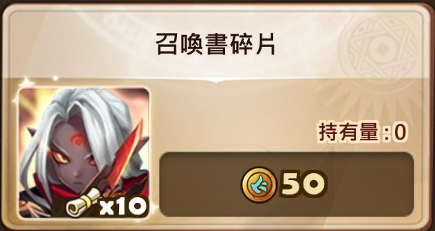
我們還需要在秘密地下城中，取得「暗維京」和 「光流浪騎士」，
聊天頻道如果出現這兩隻的地下城，記得各打一隻出來，可以吃二星其他屬性升到滿技

然後用 召換師之路 的 特別任務，自選換出 火太白 ( 火屬性攻擊+45% )
如果已經用掉的話，可以用 火熱時刻召喚 ，換出 火九尾 ( 火屬性攻擊+40%)
以及 召喚師歡迎活動 第四個，自選出 火希爾菲德
如果已經用掉，可以改用 第三個 活動，自選出 火熊貓

2.
我們需要製作一些低階的 鬥志 + 意志 符文，有三隻砲灰角色需要用到
到魔法製作研究所，選初級符文，做一些白綠爛符文就可以，越爛越好
這三隻角色分別是 「 火太白 」、「 水戰鬥之熊 」、「 火希爾菲德 」
火太白 裝 三套鬥志 爛符，水戰鬥之熊、火希爾菲德 則需要 兩套鬥志 + 一套意志
這三隻角色都不要升星跟升級，維持 1 等就好

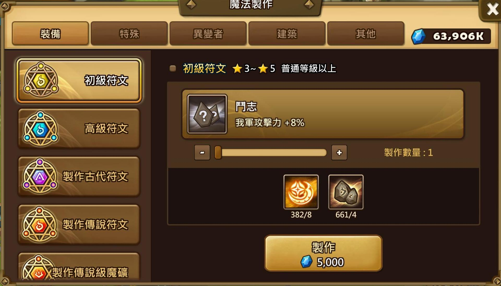
3.
會需要很多意志符文，活動送符文的時候可以考慮選 意志
可以多刷 死亡地下城，提升符文 ( 激怒 + 意志 )
< 注意事項 >
影片中的隊長技組合 = 「 火屬+23%爆擊、火屬+45%攻擊、全屬+25%攻擊 」
建議拿到 銀色尾翼 後，把 水魔劍 換掉
影片中沒換，是因為當時試煉之塔還沒刷新，任務解不了
只有+火屬23%爆擊率，代表我們在配符文的時候，火屬性打手要達成 77% 爆擊率
這樣 77% + 23% = 100%，最大化輸出
火神偷例外，因為他的技能內建 +30% 爆擊率，所以他只需要稱到 47% 爆擊率
暗犬神 建議稱到 100% ，提高輸出
< 隊伍組成 >
先附上我的隊伍供參考
單人速刷總共需要3個隊伍，18隻魔靈
給官方的建議
1. 前期送的 光精靈巡邏者 基本上沒用處，建議換成其他角色
2. 魔法粉劑 建議加入 召喚師歡迎活動 ，讓玩家可直接兌換
3. 這次的任務對新手來說太困難，建議降低難度
結語
建議大家搭配影片觀看，文章有省略一部份
祝大家速通順利，抽卷 都 紫色閃電
< 注意事項 >
1.
王的速度 超過 171，整隊速度在171以下的話，王開場會先攻擊
會運用這點，讓三隊的速度都 小於171，讓王開場先攻擊
這樣攻擊模式會固定，提升通關穩定度
2.
傷害量、出手順序、破防 Debuff 是影響穩定度的關鍵，
前期的符文不強，我們需要靠隊長技的加成來強化傷害
建議拿到 銀色尾翼 後，把 水魔劍 換掉
影片中沒換，是因為當時試煉之塔還沒刷新，任務解不了
只有+火屬23%爆擊率，代表我們在配符文的時候，火屬性打手要達成 77% 爆擊率
這樣 77% + 23% = 100%，最大化輸出
火神偷例外，因為他的技能內建 +30% 爆擊率，所以他只需要稱到 47% 爆擊率
暗犬神 建議稱到 100% ，提高輸出
< 隊伍組成 >
先附上我的隊伍供參考

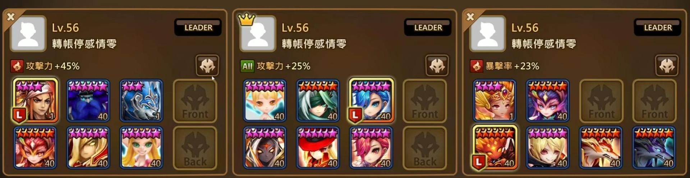
單人速刷總共需要3個隊伍，18隻魔靈
用各隊的核心來簡稱，分別是「雷帝隊」、「火劍隊」、「犬神隊」
前期資源角色不多的情況下，這 3 隊是運用可取得的角色搭配出來的
不一定要這樣配，只是這樣比較好湊出來，經過測試可以穩刷
王在血量剩下50%時，會強制發動大滅絕，並清除自身所有弱化
所以火雷帝在王的血量 50%前 和 50%後，都要能夠完整輸出
符文 請參考 影片 1:18:30 處，目前有一些角色符文還需要更換成鬥志，
不過影響不大，接下來分別說明三個隊伍的組成
不過影響不大，接下來分別說明三個隊伍的組成
雷帝隊
出手順序 = 火哈勒普 → 光卡烏格 → 火雷帝 → 暗維京 → 兩隻砲灰沒機會出手
符文建議
火哈勒普 = 鬥志*2 + 意志，稱體防命中，速度不要超過171，確保王先攻擊，
一開始湊不出鬥志只有意志也行，因為要第一個出手不能被緩速，
所以帶意志，鬥志強化火雷帝的輸出
一開始湊不出鬥志只有意志也行，因為要第一個出手不能被緩速，
所以帶意志，鬥志強化火雷帝的輸出
光卡烏格 = 鬥志*2 + 意志，稱體防命中，第二個出手，需要被動技破防所以要意志，
要撐到100%命中，沒上到破防很容易翻車，鬥志不夠就先 意志+雜符 稱命中
要撐到100%命中，沒上到破防很容易翻車，鬥志不夠就先 意志+雜符 稱命中
火雷帝 = 激怒 + 意志，攻、暴傷、攻，爆擊率要撐到77%，加上隊長技100%爆，
一定要意志才不會被忘卻
一定要意志才不會被忘卻
暗維京 = 鬥志*2 + 意志，體、體、體，稱血防就對了，他需要坦住龍的所有口水
火太白 = 鬥志*3，給火雷帝疊知識用的，符文越爛越好
水戰鬥之熊 = 鬥志*2 + 意志，給火雷帝疊知識用的，但我們需要他的被動復活低血量
觸發火哈勒普開場放三技補血加攻，所以要意志
觸發火哈勒普開場放三技補血加攻，所以要意志
---------------------------------------------------------------------------------------------
如上述，火雷帝是速刷的核心角色，所以圍繞著火雷帝來搭配
由於火雷帝的被動，獲得強化效果 和 隊友死亡 都可以獲得知識
整隊的速隊會故意小於171，讓王開場先攻擊，
所以 火太白 和 水戰鬥之熊 開場會被王打死，確保火雷帝能疊滿知識
簡化整個戰鬥過程如下
開場王打死火太白、水戰鬥熊，火雷帝疊滿知識 → 火哈勒普補血加攻
→ 光卡破防 → 火雷帝3技 → 暗維京復活火太白 → 王達到50%血，放大滅絕 →
火太白、水戰鬥熊再次死去，火雷帝疊滿知識 → 火哈二技 → 光卡破防 →
火雷帝再次3技 → 結束 ( 或被暈到翻車 )
結論就是光卡最好100%命中，雷帝77%爆以後盡量撐高爆傷跟攻擊，
整隊出手順序要正確，速度不用快
整隊出手順序要正確，速度不用快
犬神隊
出手順序 = 火最高 → 暗哈勒普 → 暗犬神 → 火犬神 → 火吸
符文建議
火希爾菲德 = 意志 + 鬥志，開場讓王打死觸發被動，符文越爛越好
火最高 = 猛攻 + 隨便 ( 推薦鬥志 )，速、傷、攻 或是 攻、傷、攻 都可以，
前期鬥志不夠，先雜符沒關係
暗哈勒普 = 前期雜符，後期改成三鬥志，體、體、體，要坦王不能死掉
火犬神 = 暴走 + 隨便 ( 推薦鬥志 )，攻、傷、攻，暴擊率要撐到 77%
暗犬神 = 激怒 + 隨便 ( 推薦鬥志 )，攻、傷、攻，暴擊率要撐到 100%，
前期激怒不夠可以先用猛攻或雜符，以100%暴擊為主
前期激怒不夠可以先用猛攻或雜符，以100%暴擊為主
火吸 = 不用換，用活動送的就可以
開場被王噴完後，火希爾菲德死去，消除全隊弱化狀態，火最高放 3 技加攻，接著犬神圍剿輸出
火劍隊
出手順序 = 光仙女王 → 光流浪 → 水魔劍 → 火魔劍 → 火神偷 或 火暗影爪
符文建議
光仙女王 = 雜符 + 意志，稱體防坦王，後期建議換 鬥志
水魔劍 = 意志 + 隨便，稱傷害增加輸出比較好，建議之後 換成 銀色尾翼
光流浪 = 意志 + 隨便 ( 推薦鬥志 )，三體力，盡量稱坦跟命中，速度要比打手快，上破防
火暗影爪 = 意志 + 猛攻或激怒，速、傷、攻 或是 攻、傷、攻 都可以，要稱一點命中上烙印
火魔劍 = 激怒 + 意志，攻、傷、攻，前期激怒不夠可以先用吸血或其他，要撐到 77% 暴擊
火神偷 = 激怒 + 意志，攻、傷、攻，要意志確保被動增加傷害，火神偷的技能內建+30%爆擊
所以只需要稱到47%爆擊，就可以達到100%爆 ( 47% + 30% + 23% = 100%)

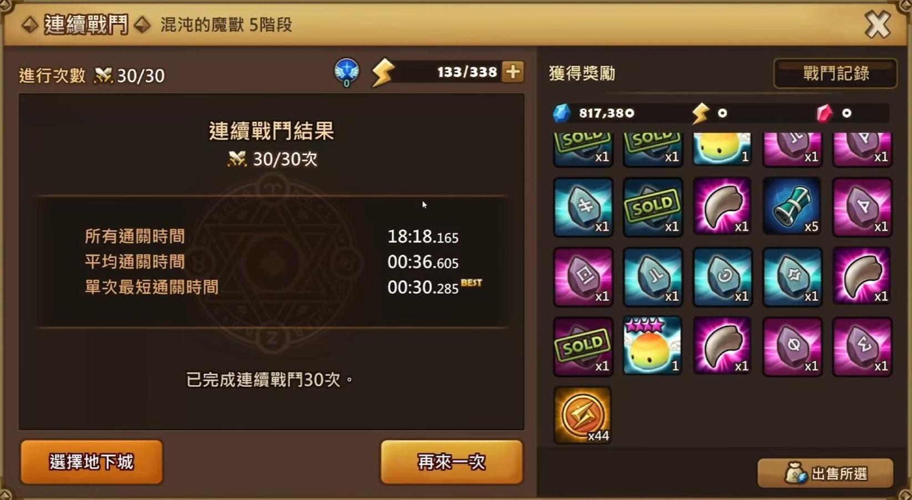
給官方的建議
1. 前期送的 光精靈巡邏者 基本上沒用處，建議換成其他角色
2. 魔法粉劑 建議加入 召喚師歡迎活動 ，讓玩家可直接兌換
3. 這次的任務對新手來說太困難，建議降低難度
結語
建議大家搭配影片觀看，文章有省略一部份
祝大家速通順利，抽卷 都 紫色閃電